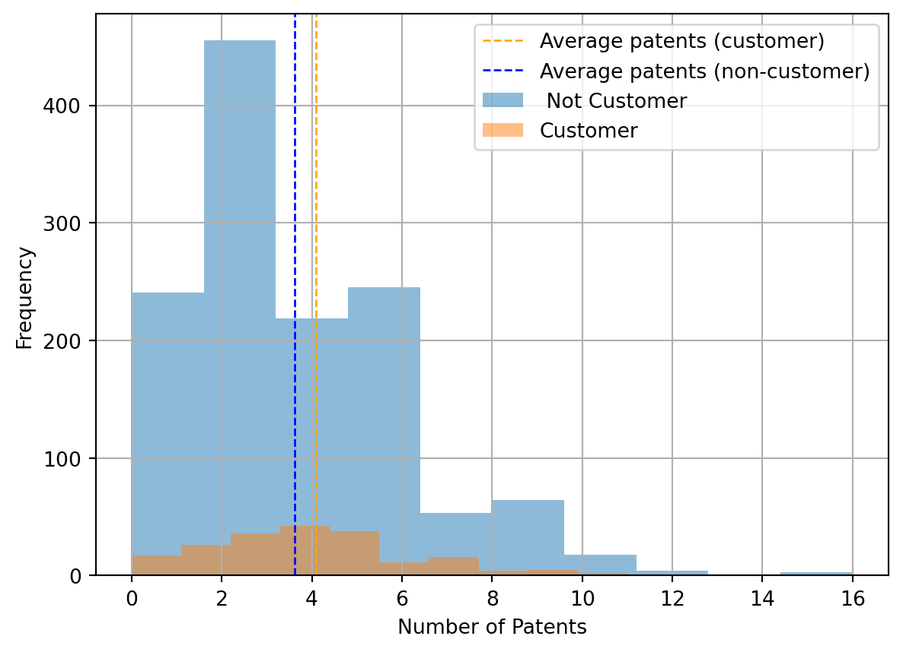
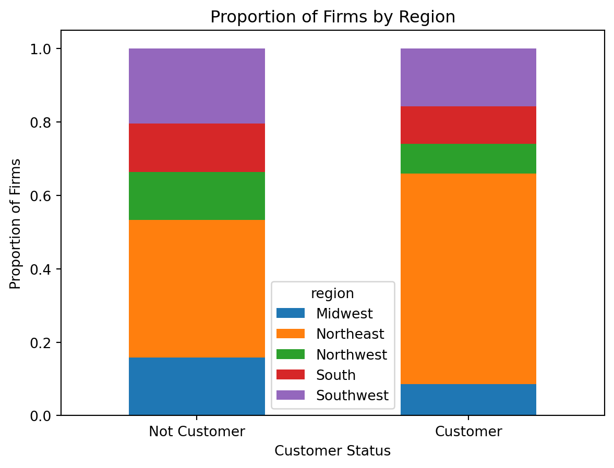
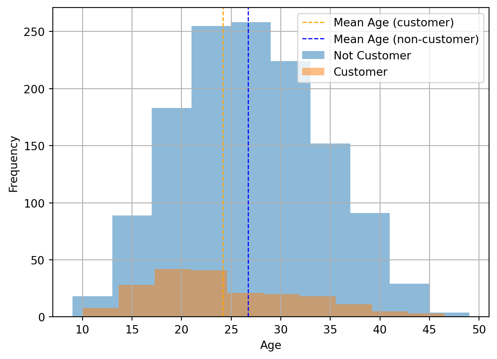
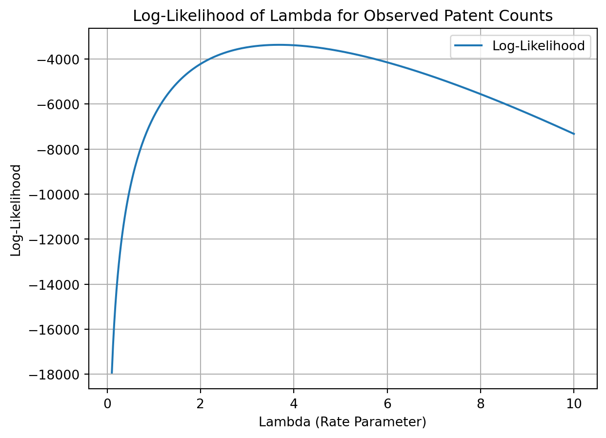
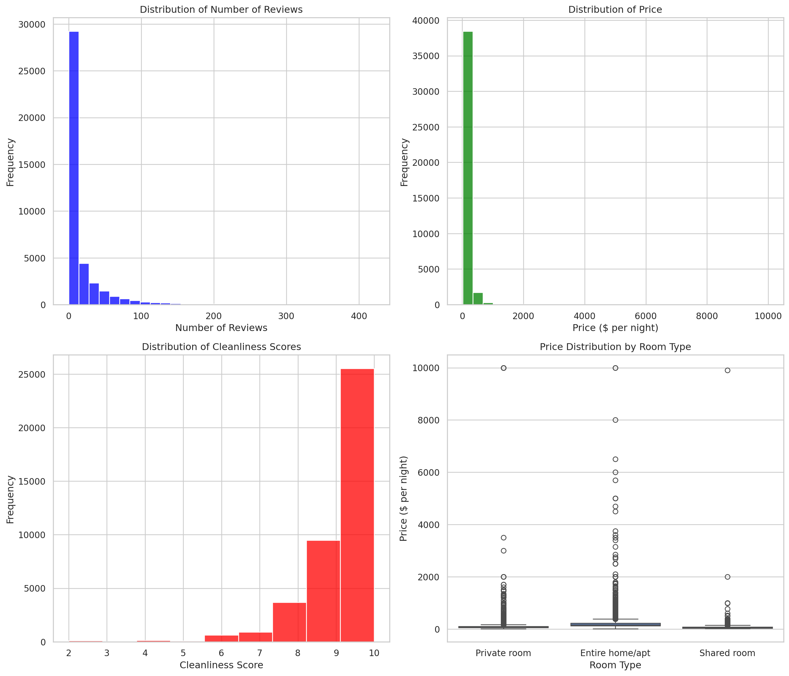

import pandas as pd
data = pd.read_csv("data/blueprinty.csv")
data.head()| Unnamed: 0 | patents | region | age | iscustomer | |
|---|---|---|---|---|---|
| 0 | 1 | 0 | Midwest | 32.5 | 0 |
| 1 | 786 | 3 | Southwest | 37.5 | 0 |
| 2 | 348 | 4 | Northwest | 27.0 | 1 |
| 3 | 927 | 3 | Northeast | 24.5 | 0 |
| 4 | 830 | 3 | Southwest | 37.0 | 0 |
Allen Abraham
May 1, 2024
Blueprinty is a small firm that makes software for developing blueprints specifically for submitting patent applications to the US patent office. Their marketing team would like to make the claim that patent applicants using Blueprinty’s software are more successful in getting their patent applications approved. Ideal data to study such an effect might include the success rate of patent applications before using Blueprinty’s software and after using it. unfortunately, such data is not available.
However, Blueprinty has collected data on 1,500 mature (non-startup) engineering firms. The data include each firm’s number of patents awarded over the last 5 years, regional location, age since incorporation, and whether or not the firm uses Blueprinty’s software. The marketing team would like to use this data to make the claim that firms using Blueprinty’s software are more successful in getting their patent applications approved.
We will start by reading in the data and conducting some exploratory data analysis to understand the data better.
| Unnamed: 0 | patents | region | age | iscustomer | |
|---|---|---|---|---|---|
| 0 | 1 | 0 | Midwest | 32.5 | 0 |
| 1 | 786 | 3 | Southwest | 37.5 | 0 |
| 2 | 348 | 4 | Northwest | 27.0 | 1 |
| 3 | 927 | 3 | Northeast | 24.5 | 0 |
| 4 | 830 | 3 | Southwest | 37.0 | 0 |
import matplotlib.pyplot as plt
mean_patents_customer = data[data['iscustomer'] == 1]['patents'].mean()
mean_patents_not_customer = data[data['iscustomer'] == 0]['patents'].mean()
data.groupby("iscustomer")["patents"].hist(alpha=0.5)
plt.xlabel("Number of Patents")
plt.ylabel("Frequency")
#plot mean as vertical line
plt.axvline(mean_patents_customer, color='orange', linestyle='dashed', linewidth=1)
plt.axvline(mean_patents_not_customer, color='blue', linestyle='dashed', linewidth=1)
#add legned for mean
plt.legend(["Average patents (customer)", "Average patents (non-customer)", " Not Customer", "Customer"])
plt.show()
print("Average number of patents for Blueprinty customers: ", mean_patents_customer)
print("Average number of patents for non-customers: ", mean_patents_not_customer)
Average number of patents for Blueprinty customers: 4.091370558375634
Average number of patents for non-customers: 3.6231772831926325We will conduct a t-test to determine if the difference in the number of patents awarded is statistically significant by customer status (whether the firm is a customer of Blueprinty or not).
from scipy.stats import ttest_ind
ttest_ind(data[data['iscustomer'] == 1]['patents'], data[data['iscustomer'] == 0]['patents'])TtestResult(statistic=2.608522046741729, pvalue=0.009183873913689007, df=1498.0)The histogram show that there are a lot more non-customers than customers in the dataset. The average number of patents for Blueprinty customers is slightly higher at 4.09 than for non-customers at 3.62. The t-test shows that this difference is statistically significant at the 5% level. However, this analysis does not account for other factors that may influence the number of patents awarded, such as the age and regional location of the firms.
Blueprinty customers are not selected at random. It may be important to account for systematic differences in the age and regional location of customers vs non-customers.
We will compare the differences in regions and ages by customer status. We will also conduct t-tests to determine if the differences in proportions of firms in each region and the difference in means of firm ages are statistically significant by customer status.
data.groupby("iscustomer")["region"].value_counts(normalize=True).unstack().plot(kind='bar', stacked=True)
plt.ylabel("Proportion of Firms")
plt.xlabel("Customer Status")
plt.title("Proportion of Firms by Region")
plt.xticks([0, 1], ['Not Customer', 'Customer'], rotation=0)
plt.show()
mean_age_customer = data[data['iscustomer'] == 1]['age'].mean()
mean_age_not_customer = data[data['iscustomer'] == 0]['age'].mean()
data.groupby("iscustomer")["age"].hist(alpha=0.5)
plt.xlabel("Age")
plt.ylabel("Frequency")
#plot mean as vertical line
plt.axvline(mean_age_customer, color='orange', linestyle='dashed', linewidth=1)
plt.axvline(mean_age_not_customer, color='blue', linestyle='dashed', linewidth=1)
plt.legend(["Mean Age (customer)", "Mean Age (non-customer)", "Not Customer", "Customer"])
plt.show()
print("Average firm age of Blueprinty customers: ", mean_age_customer)
print("Average firm age of non-customers: ", mean_age_not_customer)

Average firm age of Blueprinty customers: 24.1497461928934
Average firm age of non-customers: 26.691481197237145We conduct multiple t-tests to determine if the difference in proportions of firms in each region is statistically significant by customer status.
# Calculate the proportion of firms in each region by customer status
region_proportions = data.groupby("iscustomer")["region"].value_counts(normalize=True).unstack(fill_value=0)
print("Region Proportions by Customer Status:")
print(region_proportions)
# T-test for difference in proportions of firms in each region by customer status for each region
results = {}
for region in region_proportions.columns:
# Extracting boolean arrays where each region equals the current region for customers and non-customers
customer_region = data[data['iscustomer'] == 1]['region'] == region
non_customer_region = data[data['iscustomer'] == 0]['region'] == region
# Performing the t-test
t_stat, p_value = ttest_ind(customer_region, non_customer_region)
results[region] = (t_stat, p_value)
resultsRegion Proportions by Customer Status:
region Midwest Northeast Northwest South Southwest
iscustomer
0 0.158864 0.374520 0.131236 0.131236 0.204144
1 0.086294 0.573604 0.081218 0.101523 0.157360{'Midwest': (-2.6680681688089445, 0.007711156311267533),
'Northeast': (5.361764651187083, 9.532637761137518e-08),
'Northwest': (-1.9819710141138518, 0.047664992121595),
'South': (-1.1657750023611042, 0.24389100563697513),
'Southwest': (-1.5359890421136921, 0.12475224230270916)}We conduct a t-test to determine if the difference in means of firm ages is statistically significant by customer status.
TtestResult(statistic=-4.621997648306684, pvalue=4.127085667816596e-06, df=1498.0)The t-tests shows that the difference in proportions of firms in each region is statistically significant for the Midwest, Northeast, and Northwest regions at the 5% level. The t-test on average age of the firm shows that the difference in means of firm ages is statistically significant at the 5% level.
Therefore, we should account for these differences in our analysis. We cannot conclude that the difference in the number of patents awarded is due to Blueprinty’s software without controlling for these differences.
Since our outcome variable of interest can only be small integer values per a set unit of time, we can use a Poisson density to model the number of patents awarded to each engineering firm over the last 5 years. We start by estimating a simple Poisson model via Maximum Likelihood.
We will write down the log-likelihood function for \(Y \sim \text{Poisson}(\lambda)\) given the Poisson probability density function of \((Y|\lambda) = e^{-\lambda}\lambda^Y/Y!\).
The log-likelihood function for a sample \(( Y_1, Y_2, \ldots, Y_n)\) from a Poisson distribution with parameter \(( \lambda)\) is given by:
\(\ell(\lambda; y_1, y_2, \ldots, y_n) = \sum_{i=1}^n y_i \log(\lambda) - n\lambda - \sum_{i=1}^n \log(y_i!)\)
Next, we will code the log-likelihood function for the Poisson model. This is a function of lambda and Y. The function should return the log-likelihood value for a given rate parameter lambda and a set of observed counts Y.
import numpy as np
def poisson_loglikelihood(lambda_, Y):
"""
Calculate the log likelihood for a Poisson distributed set of observed counts, Y, given a rate lambda_,
without using gammaln for factorial computation.
Parameters:
lambda_ : float
The rate parameter of the Poisson distribution (lambda > 0).
Y : array_like
Array of observed counts (non-negative integers).
Returns:
float
The log likelihood value.
"""
if lambda_ <= 0:
return -np.inf # log likelihood is undefined for non-positive lambda
Y = np.asarray(Y)
log_factorials = np.array([np.sum(np.log(np.arange(1, y+1))) if y > 0 else 0 for y in Y])
return np.sum(Y * np.log(lambda_) - lambda_ - log_factorials)We will use the above function to plot a range of lambdas (0.1-10) on the horizontal axis and the log likelihood on the vertical axis. We will use the observed patent counts as Y. The maximum likelihood estimate (MLE) of lambda is the value that maximizes the log-likelihood function.
Y = data['patents'].values # Extracting patent counts
# Define the range of lambda values from a small positive number up to a reasonable upper limit
lambda_values = np.linspace(0.1, 10, 400) # from 0.1 to 10, 400 points
log_likelihoods = [poisson_loglikelihood(l, Y) for l in lambda_values]
# Plotting the results
plt.plot(lambda_values, log_likelihoods, label='Log-Likelihood')
plt.title('Log-Likelihood of Lambda for Observed Patent Counts')
plt.xlabel('Lambda (Rate Parameter)')
plt.ylabel('Log-Likelihood')
plt.grid(True)
plt.legend()
plt.show()
We will use optimization to find the MLE of lambda. We will use the scipy.optimize.minimize function to minimize the negative log-likelihood function. The negative log-likelihood is the negative of the log-likelihood function, which we want to minimize. We will set the bounds of the optimization to ensure that lambda is positive.
We will also calculate the mean number of patents per firm which should be close to the MLE of lambda since the Poisson distribution has only one parameter which is the rate parameter lambda. The mean of a Poisson distribution is equal to its rate parameter.
from scipy.optimize import minimize
from scipy.special import gammaln
def negative_log_likelihood(lambda_, Y):
if lambda_ <= 0: # Log-likelihood undefined for non-positive lambda values
return np.inf
return -np.sum(Y * np.log(lambda_) - lambda_ - gammaln(Y + 1))
Y = data['patents'].values
# Find MLE for lambda using optimization
result = minimize(fun=negative_log_likelihood, x0=np.array([1]), args=(Y,), bounds=[(0.1, None)])
# Output the results
if result.success:
print(f"MLE for lambda (lambda_mle): {result.x[0]}")
else:
print("Optimization failed:", result.message)
mean_patents = np.mean(Y)
print("Mean number of patents per firm: ", mean_patents)MLE for lambda (lambda_mle): 3.6846664821737423
Mean number of patents per firm: 3.6846666666666668As expected, the MLE of lambda is the same as the average number of patents per firm. This is because the Poisson distribution has only one parameter, the rate parameter lambda, which is equal to the mean of the distribution.
Next, we extend our simple Poisson model to a Poisson Regression Model such that \(Y_i = \text{Poisson}(\lambda_i)\) where \(\lambda_i = \exp(X_i'\beta)\). The interpretation is that the success rate of patent awards is not constant across all firms (\(\lambda\)) but rather is a function of firm characteristics \(X_i\). Specifically, we will use the covariates age, age squared, region, and whether the firm is a customer of Blueprinty.
We will Update our log-likelihood function with an additional argument to take in a covariate matrix X. We will also change the parameter of the model from lambda to the beta vector. In this model, lambda must be a positive number, so we choose the inverse link function g() to be exp() so that_ \(\lambda_i = e^{X_i'\beta}\).
We will make sure that the first column of X are all 1’s to enable a constant term in the model, and the subsequent columns are age, age squared, binary variables for all but one of the regions, and the binary iscustomer variable.
import statsmodels.api as sm
# Prepare the covariate matrix X
data['age_squared'] = data['age'] ** 2 # Add age squared
data = pd.get_dummies(data, columns=['region'], drop_first=True) # One-hot encode region
X = np.column_stack([
np.ones(len(data)), # Intercept
data['age'],
data['age_squared'],
data['iscustomer']
] + [data[col] for col in data.columns if 'region_' in col])
Y = data['patents'].values
def neg_log_likelihood(beta, Y, X):
eta = np.dot(X, beta)
lambda_i = np.exp(eta)
log_likelihood = np.sum(Y * np.log(lambda_i) - lambda_i - gammaln(Y + 1))
return -log_likelihood # Minimize this
beta_initial = np.zeros(X.shape[1]) # Initial guess for the parameters
neg_log_likelihood(beta_initial, Y, X)6548.8869900694435Next, we will use the updated function with scipy.optimize to find the MLE vector and the Hessian of the Poisson model with covariates. We will use the Hessian to find standard errors of the beta parameter.
from scipy.optimize import minimize
import numpy as np
# Scale features
from sklearn.preprocessing import StandardScaler
scaler = StandardScaler()
X_scaled = scaler.fit_transform(X[:, 1:]) # Assuming first column is intercept
X_scaled = np.hstack((np.ones((X.shape[0], 1)), X_scaled)) # Add intercept back
# Change optimization method and adjust initial guesses
beta_initial = np.random.normal(loc=0.0, scale=0.1, size=X.shape[1]) #
result = minimize(
neg_log_likelihood, beta_initial, args=(Y, X_scaled),
method='L-BFGS-B', options={'disp': True, 'maxiter': 500}
)
if result.success:
beta_mle = result.x
print("MLE of beta:", beta_mle)
else:
print("Optimization failed:", result.message)MLE of beta: [ 1.28539498 1.04647703 -1.14086321 0.03989462 0.04831426 -0.0066364
0.01905682 0.0204638 ]hessian_matrix = result.hess_inv.todense()
std_errors = np.sqrt(np.diag(hessian_matrix))
print("Standard errors:", std_errors)Standard errors: [0.82076691 1.06973023 0.82063401 0.49219156 0.40162856 0.52662195
0.63358785 0.68517075]coefficients_table = pd.DataFrame({
'Coefficient': beta_mle,
'Standard Error': std_errors
}, index=['Intercept', 'Age', 'Age Squared', 'Is Customer'] + [f'Region_{i}' for i in range(len(std_errors) - 4)])
print(coefficients_table) Coefficient Standard Error
Intercept 1.285395 0.820767
Age 1.046477 1.069730
Age Squared -1.140863 0.820634
Is Customer 0.039895 0.492192
Region_0 0.048314 0.401629
Region_1 -0.006636 0.526622
Region_2 0.019057 0.633588
Region_3 0.020464 0.685171We will verify the results using Python sm.GLM() function.
import statsmodels.api as sm
# Create the GLM model with Poisson family
poisson_model = sm.GLM(Y, X_scaled, family=sm.families.Poisson())
# Fit the model
result = poisson_model.fit()
# Print the summary of the model to see the results
print(result.summary()) Generalized Linear Model Regression Results
==============================================================================
Dep. Variable: y No. Observations: 1500
Model: GLM Df Residuals: 1492
Model Family: Poisson Df Model: 7
Link Function: Log Scale: 1.0000
Method: IRLS Log-Likelihood: -3275.9
Date: Wed, 01 May 2024 Deviance: 2178.8
Time: 19:10:45 Pearson chi2: 2.11e+03
No. Iterations: 5 Pseudo R-squ. (CS): 0.1152
Covariance Type: nonrobust
==============================================================================
coef std err z P>|z| [0.025 0.975]
------------------------------------------------------------------------------
const 1.2854 0.014 93.584 0.000 1.258 1.312
x1 1.0465 0.100 10.414 0.000 0.850 1.243
x2 -1.1408 0.102 -11.131 0.000 -1.342 -0.940
x3 0.0399 0.013 3.035 0.002 0.014 0.066
x4 0.0483 0.021 2.347 0.019 0.008 0.089
x5 -0.0066 0.018 -0.374 0.709 -0.041 0.028
x6 0.0191 0.018 1.085 0.278 -0.015 0.053
x7 0.0205 0.019 1.088 0.277 -0.016 0.057
==============================================================================todo: Interpret the results. What do you conclude about the effect of Blueprinty’s software on patent success?
AirBnB is a popular platform for booking short-term rentals. In March 2017, students Annika Awad, Evan Lebo, and Anna Linden scraped of 40,000 Airbnb listings from New York City. The data include the following variables:
- `id` = unique ID number for each unit
- `last_scraped` = date when information scraped
- `host_since` = date when host first listed the unit on Airbnb
- `days` = `last_scraped` - `host_since` = number of days the unit has been listed
- `room_type` = Entire home/apt., Private room, or Shared room
- `bathrooms` = number of bathrooms
- `bedrooms` = number of bedrooms
- `price` = price per night (dollars)
- `number_of_reviews` = number of reviews for the unit on Airbnb
- `review_scores_cleanliness` = a cleanliness score from reviews (1-10)
- `review_scores_location` = a "quality of location" score from reviews (1-10)
- `review_scores_value` = a "quality of value" score from reviews (1-10)
- `instant_bookable` = "t" if instantly bookable, "f" if nottodo: Assume the number of reviews is a good proxy for the number of bookings. Perform some exploratory data analysis to get a feel for the data, handle or drop observations with missing values on relevant variables, build one or more models (e.g., a poisson regression model for the number of bookings as proxied by the number of reviews), and interpret model coefficients to describe variation in the number of reviews as a function of the variables provided.
We will start by reading in the data
airbnb_data = pd.read_csv("data/airbnb.csv")
# Display the first few rows and summary statistics
airbnb_data.head(), airbnb_data.describe()( Unnamed: 0 id days last_scraped host_since room_type \
0 1 2515 3130 4/2/2017 9/6/2008 Private room
1 2 2595 3127 4/2/2017 9/9/2008 Entire home/apt
2 3 3647 3050 4/2/2017 11/25/2008 Private room
3 4 3831 3038 4/2/2017 12/7/2008 Entire home/apt
4 5 4611 3012 4/2/2017 1/2/2009 Private room
bathrooms bedrooms price number_of_reviews review_scores_cleanliness \
0 1.0 1.0 59 150 9.0
1 1.0 0.0 230 20 9.0
2 1.0 1.0 150 0 NaN
3 1.0 1.0 89 116 9.0
4 NaN 1.0 39 93 9.0
review_scores_location review_scores_value instant_bookable
0 9.0 9.0 f
1 10.0 9.0 f
2 NaN NaN f
3 9.0 9.0 f
4 8.0 9.0 t ,
Unnamed: 0 id days bathrooms bedrooms \
count 40628.000000 4.062800e+04 40628.000000 40468.000000 40552.000000
mean 20314.500000 9.698889e+06 1102.368219 1.124592 1.147046
std 11728.437705 5.460166e+06 1383.269358 0.385884 0.691746
min 1.000000 2.515000e+03 1.000000 0.000000 0.000000
25% 10157.750000 4.889868e+06 542.000000 1.000000 1.000000
50% 20314.500000 9.862878e+06 996.000000 1.000000 1.000000
75% 30471.250000 1.466789e+07 1535.000000 1.000000 1.000000
max 40628.000000 1.800967e+07 42828.000000 8.000000 10.000000
price number_of_reviews review_scores_cleanliness \
count 40628.000000 40628.000000 30433.000000
mean 144.760732 15.904426 9.198370
std 210.657597 29.246009 1.119935
min 10.000000 0.000000 2.000000
25% 70.000000 1.000000 9.000000
50% 100.000000 4.000000 10.000000
75% 170.000000 17.000000 10.000000
max 10000.000000 421.000000 10.000000
review_scores_location review_scores_value
count 30374.000000 30372.000000
mean 9.413544 9.331522
std 0.844949 0.902966
min 2.000000 2.000000
25% 9.000000 9.000000
50% 10.000000 10.000000
75% 10.000000 10.000000
max 10.000000 10.000000 )We will perform some data cleaning and transformation. We will convert date columns to datetime format, remove rows with missing values in host_since column since it has only 35 missing values, fill missing values for bathrooms and bedrooms (160 and 76 missing rows, respectively) with median, handle missing review scores by filling with median, convert instant_bookable to boolean, and remove the unnamed: 0 column.
# Convert date columns to datetime format
airbnb_data['last_scraped'] = pd.to_datetime(airbnb_data['last_scraped'], format='%m/%d/%Y')
airbnb_data['host_since'] = pd.to_datetime(airbnb_data['host_since'], format='%m/%d/%Y')
# remove rows with missing values in host_since column
airbnb_data.dropna(subset=['host_since'], inplace=True)
# Fill missing values for bathrooms and bedrooms with median
airbnb_data['bathrooms'].fillna(airbnb_data['bathrooms'].median(), inplace=True)
airbnb_data['bedrooms'].fillna(airbnb_data['bedrooms'].median(), inplace=True)
# Handling missing review scores by filling with median
for column in ['review_scores_cleanliness', 'review_scores_location', 'review_scores_value']:
airbnb_data[column].fillna(airbnb_data[column].median(), inplace=True)
# convert instant_bookable to boolean. 't' = True, 'f' = False
airbnb_data['instant_bookable'] = airbnb_data['instant_bookable'].map({'t': True, 'f': False})
# remove unnamed: 0 column
airbnb_data.drop('Unnamed: 0', axis=1, inplace=True)
# Check for any remaining missing values and verify transformations
airbnb_data.isnull().sum(), airbnb_data.head()(id 0
days 0
last_scraped 0
host_since 0
room_type 0
bathrooms 0
bedrooms 0
price 0
number_of_reviews 0
review_scores_cleanliness 0
review_scores_location 0
review_scores_value 0
instant_bookable 0
dtype: int64,
id days last_scraped host_since room_type bathrooms bedrooms \
0 2515 3130 2017-04-02 2008-09-06 Private room 1.0 1.0
1 2595 3127 2017-04-02 2008-09-09 Entire home/apt 1.0 0.0
2 3647 3050 2017-04-02 2008-11-25 Private room 1.0 1.0
3 3831 3038 2017-04-02 2008-12-07 Entire home/apt 1.0 1.0
4 4611 3012 2017-04-02 2009-01-02 Private room 1.0 1.0
price number_of_reviews review_scores_cleanliness \
0 59 150 9.0
1 230 20 9.0
2 150 0 10.0
3 89 116 9.0
4 39 93 9.0
review_scores_location review_scores_value instant_bookable
0 9.0 9.0 False
1 10.0 9.0 False
2 10.0 10.0 False
3 9.0 9.0 False
4 8.0 9.0 True )We will perform some exploratory data analysis to get a feel for the data. We will plot histograms of key variables and a boxplot of price by room type.
import matplotlib.pyplot as plt
import seaborn as sns
# Setting up the aesthetics for plots
sns.set(style="whitegrid")
# Creating a figure to plot distributions of key variables
fig, axes = plt.subplots(2, 2, figsize=(14, 12))
# Distribution of 'number_of_reviews'
sns.histplot(airbnb_data['number_of_reviews'], bins=30, ax=axes[0, 0], kde=False, color='blue')
axes[0, 0].set_title('Distribution of Number of Reviews')
axes[0, 0].set_xlabel('Number of Reviews')
axes[0, 0].set_ylabel('Frequency')
# Distribution of 'price'
sns.histplot(airbnb_data['price'], bins=30, ax=axes[0, 1], kde=False, color='green')
axes[0, 1].set_title('Distribution of Price')
axes[0, 1].set_xlabel('Price ($ per night)')
axes[0, 1].set_ylabel('Frequency')
# Distribution of 'review_scores_cleanliness'
sns.histplot(airbnb_data['review_scores_cleanliness'], bins=9, ax=axes[1, 0], kde=False, color='red')
axes[1, 0].set_title('Distribution of Cleanliness Scores')
axes[1, 0].set_xlabel('Cleanliness Score')
axes[1, 0].set_ylabel('Frequency')
# Boxplot of price by room type
sns.boxplot(data=airbnb_data, x='room_type', y='price', ax=axes[1, 1])
axes[1, 1].set_title('Price Distribution by Room Type')
axes[1, 1].set_xlabel('Room Type')
axes[1, 1].set_ylabel('Price ($ per night)')
plt.tight_layout()
plt.show()
Finally, we will build a Poisson regression model for the number of reviews as a function of the variables provided. We will use the number_of_reviews as the dependent variable and days, room_type, bathrooms, bedrooms, price, review_scores_cleanliness, review_scores_location, review_scores_value, and instant_bookable as independent variables. We will one-hot encode the room_type variable, standardize the features, and use the scipy.optimize.minimize function to find the MLE of the beta coefficients.
from math import exp
# Drop rows with missing values in relevant columns
columns_to_keep = ['days', 'room_type', 'bathrooms', 'bedrooms', 'price',
'review_scores_cleanliness', 'review_scores_location',
'review_scores_value', 'instant_bookable', 'number_of_reviews']
data_clean = airbnb_data[columns_to_keep]
# One-hot encode categorical variables
data_clean = pd.get_dummies(data_clean, columns=['room_type'], drop_first=True)
# Separate features and target
features = [col for col in data_clean.columns if col != 'number_of_reviews']
X = data_clean[features].values
Y = data_clean['number_of_reviews'].values
# Add intercept column
X = np.column_stack([np.ones(X.shape[0]), X])
# Standardize features (excluding intercept)
scaler = StandardScaler()
X[:, 1:] = scaler.fit_transform(X[:, 1:])
# Define a custom function for exponentiation
def custom_exp(arr):
return np.array([exp(x) for x in arr])
# Define the negative log-likelihood function for Poisson regression
def neg_log_likelihood(beta, Y, X):
eta = np.dot(X, beta)
lambda_i = custom_exp(eta) # Use the custom exponentiation function
log_likelihood = np.sum(Y * np.log(lambda_i) - lambda_i - gammaln(Y + 1))
return -log_likelihood
# Initial guess for parameters
beta_initial = np.zeros(X.shape[1])
# Optimize to find the MLE of beta
result = minimize(neg_log_likelihood, beta_initial, args=(Y, X), method='L-BFGS-B', options={'disp': True, 'maxiter': 500})
# Extract results
if result.success:
beta_mle = result.x
else:
print("Optimization failed:", result.message)
# Get coefficient names
coeff_names = ['Intercept'] + features
# Create a DataFrame to hold coefficients
coef_df = pd.DataFrame({'Coefficient': coeff_names, 'Estimate': beta_mle})
# Display the coefficients
print(coef_df) Coefficient Estimate
0 Intercept 2.638190
1 days 0.401703
2 bathrooms -0.041503
3 bedrooms 0.047976
4 price -0.052433
5 review_scores_cleanliness 0.042785
6 review_scores_location -0.137250
7 review_scores_value -0.128118
8 instant_bookable 0.192071
9 room_type_Private room -0.046005
10 room_type_Shared room -0.039299The Poisson regression model provides estimates for the coefficients of the model. The coefficients represent the log of the rate of reviews for each unit. The interpretation of the coefficients is as follows:
Intercept (2.64): Represents the baseline log count of bookings (as proxied by reviews) for the reference level of categorical variables when all other variables are at their reference levels or zero.
Days (0.40): A positive coefficient indicates that as the number of days since the listing was created increases, the expected number of bookings increases. Specifically, for each additional day, the expected log count of bookings increases by approximately 0.40. This suggests that older listings tend to have more bookings, possibly due to accumulating reviews and gaining more visibility.
Bathrooms (-0.04): A negative coefficient means that as the number of bathrooms increases, the expected number of bookings decreases. This might suggest that the number of bathrooms isn’t a significant factor influencing bookings or that properties with more bathrooms have a different appeal.
Bedrooms (0.05): A positive coefficient suggests that as the number of bedrooms increases, the expected number of bookings increases. This implies that larger properties (in terms of bedrooms) tend to attract more bookings, likely because they accommodate more guests.
Price (-0.05): A small negative coefficient suggests that an increase in the listing price is associated with a slight decrease in the expected number of bookings. Higher prices may deter some potential customers, leading to fewer bookings.
Review Score Cleanliness (0.04): A positive coefficient indicates that as the cleanliness score increases, the expected number of bookings increases. This means that customers value cleanliness, and highly-rated properties tend to have more bookings.
Review Score Location (-0.14): A negative coefficient implies that higher location scores are associated with fewer bookings. While counterintuitive, this may indicate that other factors might be overshadowing location, or that listings in prime locations are more competitive.
Review Score Value (-0.13): A negative coefficient means that higher value scores are associated with fewer bookings. This could imply that while customers value “value for money,” this factor alone may not lead to more bookings.
Instant Bookable (0.19): Listings that are instantly bookable tend to have more bookings than those that are not. This suggests that ease of booking is an important factor for customers when choosing properties.
Room Type: Private Room (-0.05): Listings with private rooms have fewer bookings compared to the reference category (entire home/apt). This suggests private rooms may be less attractive to a larger customer base.
Room Type: Shared Room (-0.04): Listings with shared rooms also have fewer bookings than the reference category. This indicates that shared rooms appeal to a niche market, leading to fewer bookings.
The most important factors influencing the number of bookings (as proxied by reviews) for Airbnb listings in New York City include the number of days since the listing was created, and whether the listing is instantly bookable. These factors have the largest impact on bookings, with older listings and instantly bookable listings attracting more bookings. Other factors such as the number of bedrooms and bathrooms, price, and room type had a relatively smaller impact on bookings.There were some unexpected results, such as the negative coefficients for location and value review scores, which may require further investigation.
The model provides insights into the factors that drive bookings and can help hosts optimize their listings for better performance.